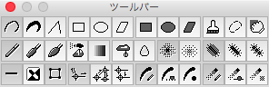

The Tool-bar Window
For choose drawing function, you can select tools on this window.(The depiction of this window is not depend on current docuemnt.)

There are varuous tools on this window, such tools show in below table:(note that for the detail of each functions see to the description of each functions, respectively.)
| Shapes, Functions | |||
|---|---|---|---|
| Lines |  |
The Free Line | desc. |
 |
The Free Line with the Pen Pressure | desc. | |
 |
The Line | desc. | |
| Frames |  |
The Shape of Rectangle with Frame | desc. |
 |
The Shape of Ellipse with Frame | desc. | |
 |
The Shape of Parallelogram with Frame | desc. | |
| Fills |  |
The Shape of Rectangle with Fill | desc. |
 |
The Shape of Ellipse with Fill | desc. | |
 |
The Shape of Parallelogram with Fill | desc. | |
| Miscellaneous |  |
The Paint | desc. |
 |
The Selection | desc. | |
 |
Scroll of View(like the Hand tool) | desc. | |
| Drawing | |||
| Drawing |  |
Normal | |
 |
Uniformed Tint(Drawing with same value of tint.) | ||
 |
Tint(Toward outside, value of tint is gradually decrease.) | ||
 |
Air Brush | ||
 |
Gradient | ||
| Filters |  |
Scatter(Scattering dots with random numbers.) | |
 |
Water Drop(Compute mixed color with surround dots(maximum at 8 dots).) | ||
| Auxiliary | |||
| The Shape of the Air Brush |  |
Normal | desc. |
 |
Half | desc. | |
| The way of move of the Air Brush |  |
Always(continuous) | desc. |
 |
Binary | desc. | |
 |
Hold pattern | desc. | |
| Modificate |  |
Continuous or Discrete | desc. |
 |
Flip tint pattern | desc. | |
 |
With or Without the Handle | desc. | |
| Control Point |  |
Fixed Original Point | desc. |
 |
Follow Last Point | desc. | |
 |
Identical Shape | desc. | |
| Width |  |
Depend on Pen Pressure | desc. |
 |
Fixed Width(i.e. depend on slider) | desc. | |
 |
Selected Style(i.e. depend on choose of style) | desc. | |
| Tint |  |
Depend on Pen Pressure | desc. |
 |
Fixed Tint(i.e. depend on slider) | desc. | |
 |
Selected Tint(i.e. depend on choose of pattern) | desc. | |